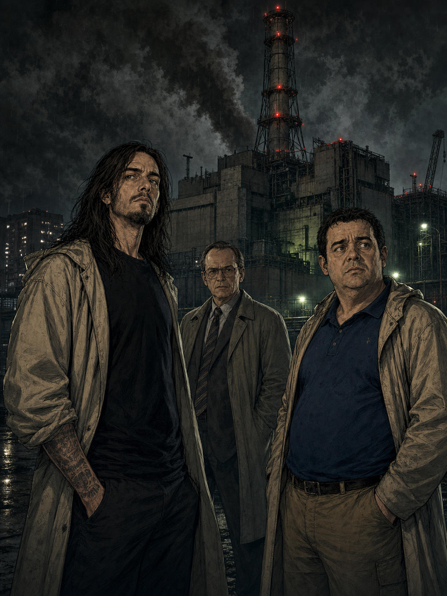
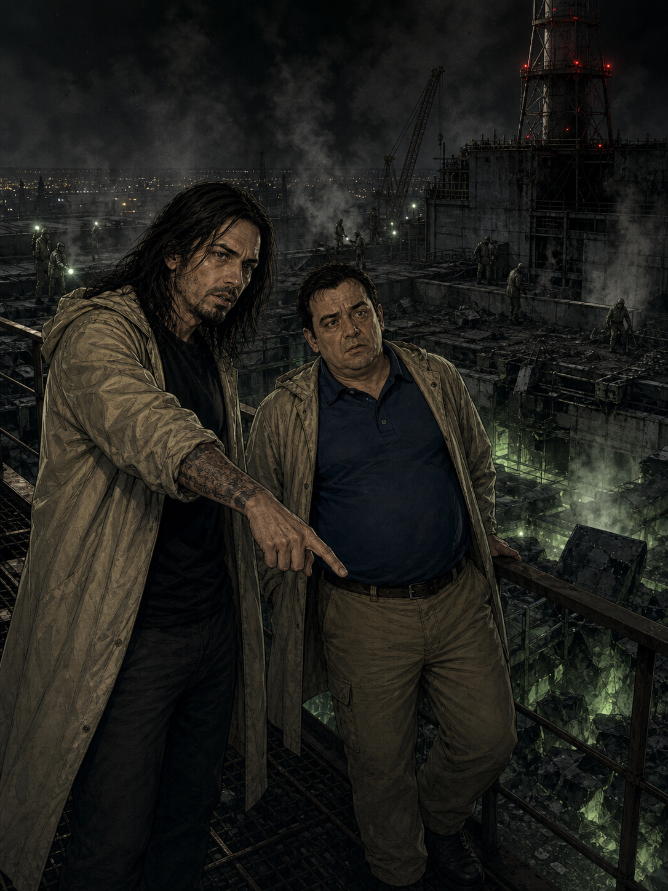
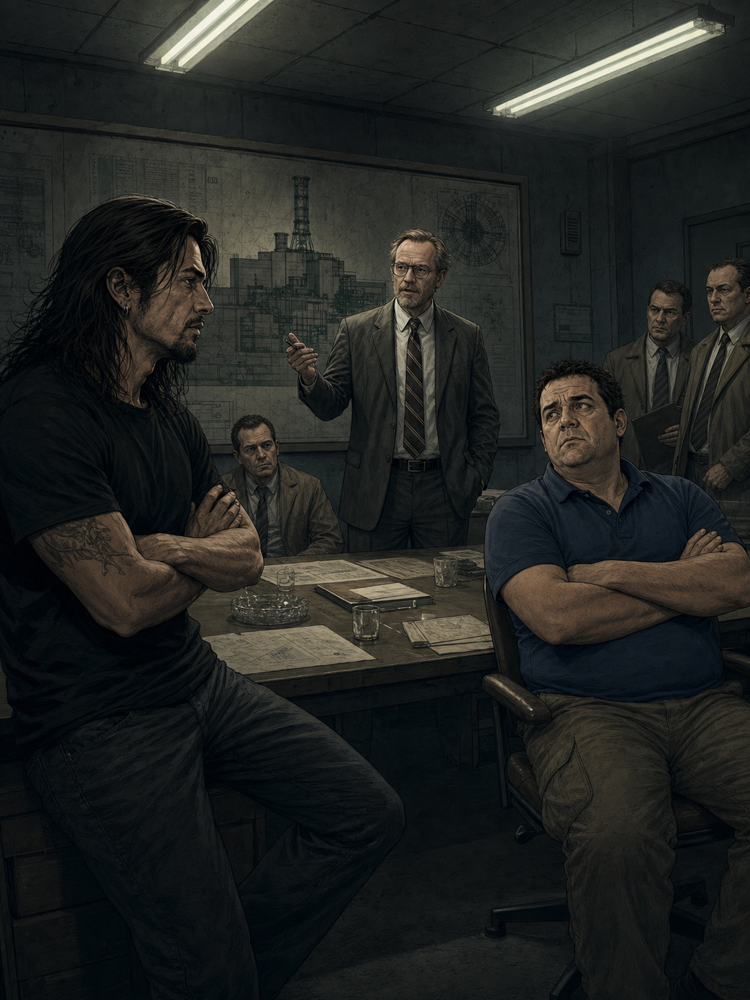
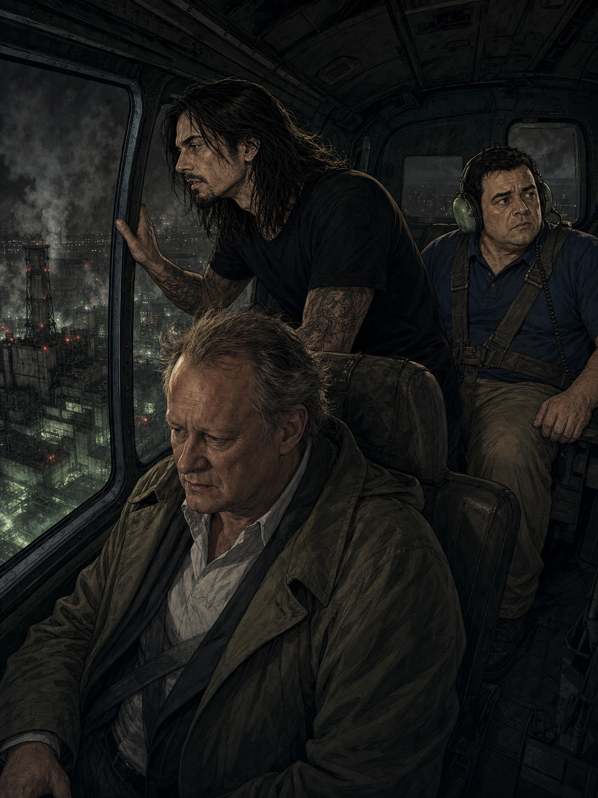
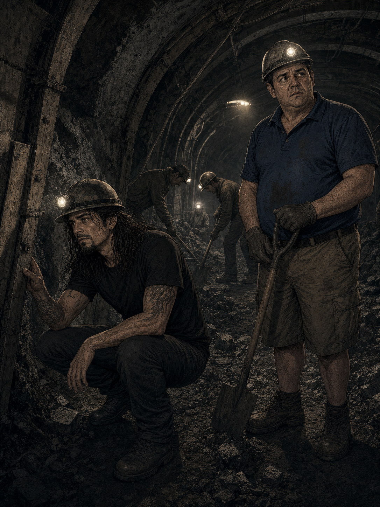
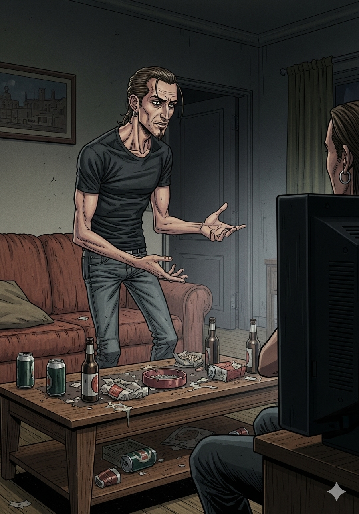
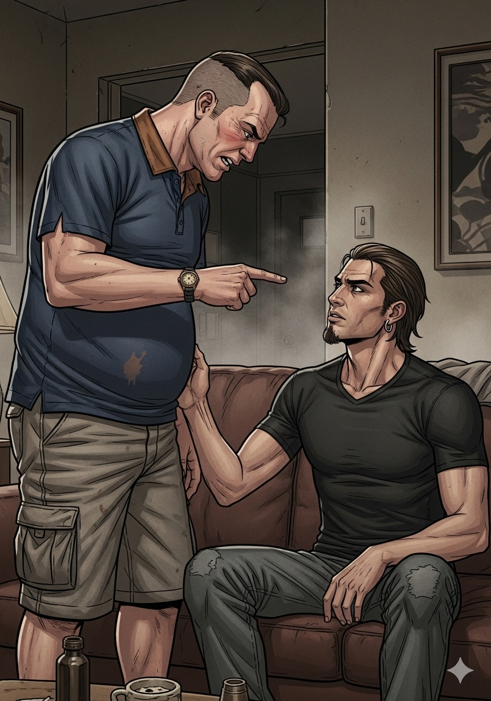
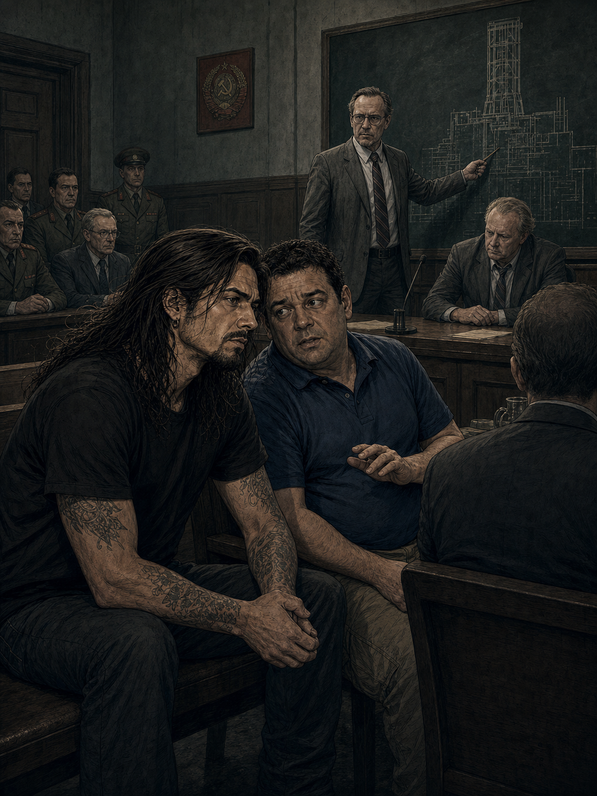
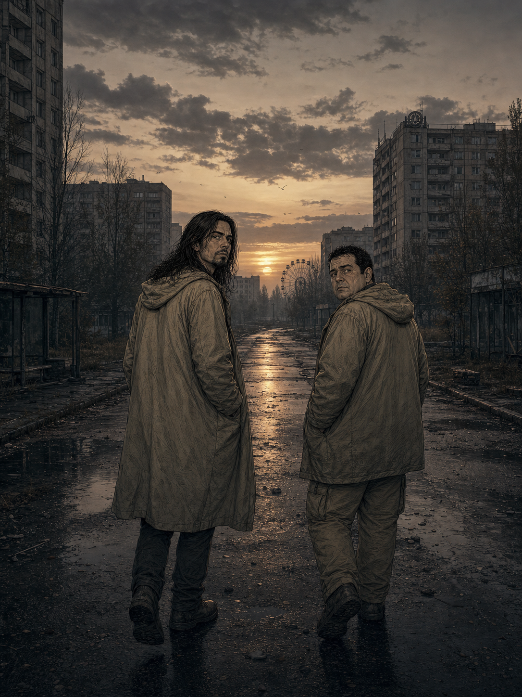

Escena 1 - El reactor

26 de abril de 1986. 1:23 de la madrugada. Algo imposible acaba de pasar.
TONI"Rulo. Dime que eso no es el reactor abierto."
RULO"Eso es el reactor abierto. Y lo peor no es la explosión. Es que van a tardar horas en admitirlo."
Escena 2 - El techo

RULO"Grafito en el suelo. Núcleo al aire. Radiación que no cabe en el contador."
TONI"Pues igual el contador no es el problema."
El aparato marcaba 3,6 porque no podía marcar más.
¡3,6 RÖNTGENS!
La frase que huele a despacho, miedo y mentira oficial.
Escena 3 - Legasov

RULO"Valery Legasov. Jared Harris con cara de haber leído el manual y el parte de defunción a la vez."
TONI"¿Y le escuchan?"
En Chernobyl, saber la verdad solo es el primer problema.
Escena 4 - Shcherbina

TONI"Este del helicóptero viene con cara de bronca ministerial."
RULO"Boris Shcherbina. Empieza defendiendo el sistema y acaba entendiendo que el sistema también está contaminado."
Escena 5 - El comité

DYATLOV"El núcleo no ha explotado. Es imposible."
TONI"Lo tiene detrás echando humo, Rulo. Esto ya no es negar. Esto es hacer cosplay de pared."
La realidad entra por la puerta. La burocracia le pide un formulario.
36 HORAS
Lo que tardaron en evacuar Pripyat. Con niños jugando bajo una nube invisible.
Escena 6 - Pripyat

RULO"Les dicen que se llevan lo justo. Que volverán en tres días."
TONI"Y no vuelven."
Una ciudad entera convertida en pausa permanente.
Escena 7 - El hospital

RULO"El capítulo de los bomberos es terror sin monstruo. El cuerpo convertido en amenaza."
TONI"Aquí no hago chiste."
Escena 8 - Los mineros

TONI"Les explican poco, les dan menos y aun así bajan."
RULO"Porque alguien tiene que hacerlo. Esa frase sostiene media serie y medio país."
Polvo, calor y gente normal haciendo algo imposible.
¡SARCÓFAGO!
Hormigón contra una verdad que seguía ardiendo.
Escena 9 - Khomyuk

RULO"Ulana Khomyuk no es una persona real única. Es todas las científicas y científicos que empujaron la verdad."
TONI"O sea, el personaje compuesto que está mejor compuesto que muchos protagonistas."
"¿Cuál es el coste de las mentiras?"
Escena 10 - Los liquidadores

RULO"Noventa segundos en el techo. Pala, plomo, correr y rezar sin decir que rezas."
TONI"Esto no es épica. Es gente pagando la factura de otros."
Escena 11 - El juicio

RULO"Legasov lo cuenta. El diseño. La prueba. La mentira. Todo lo que no cabía en el informe oficial."
TONI"Y ahí entiendes que la verdad también puede ser una escena de acción."
Escena 12 - La ciudad vacía

No era una catástrofe cerrada. Era una advertencia abierta.
TONI"¿Nota?"
RULO"9,5. Porque la serie perfecta no existe, pero esta se acerca con un contador que no llega más lejos."
☢ Veredicto de Rulo y Toni ☢
9,5
LA MEJOR MINISERIE DE LA HISTORIA
Cinco episodios sin grasa. Una lección de puesta en escena, interpretación y tensión política. Chernobyl no convierte la tragedia en espectáculo: la convierte en memoria. Y eso pesa más.